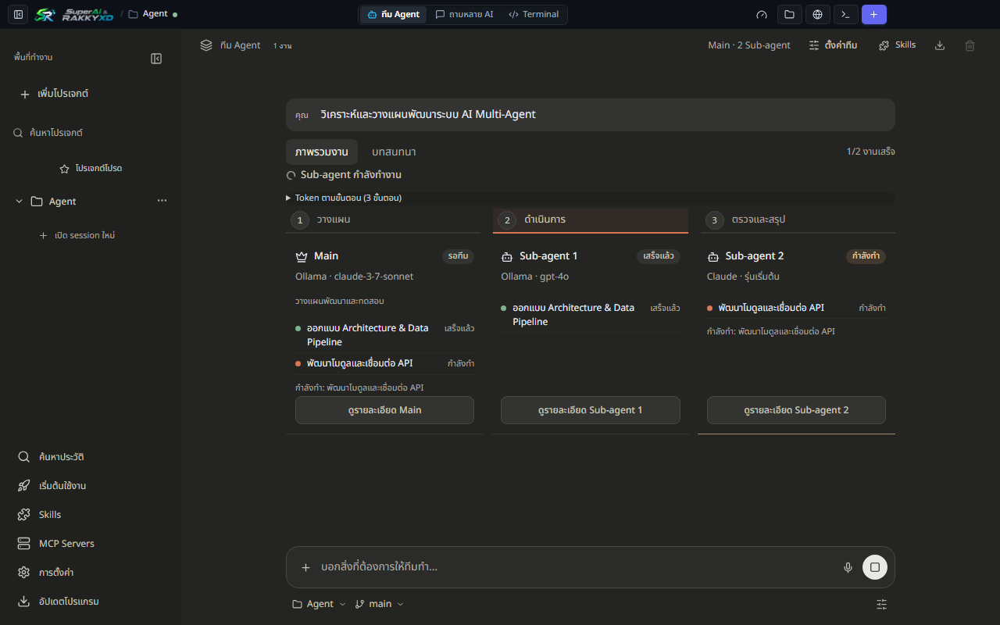

ทีม Agent
Main Agent วางแผนงาน ถามกลับเมื่อโจทย์ไม่ชัด และกระจายงานให้ Sub-agents สูงสุด 6 ตัวทำงานคู่ขนาน
เลิกสลับแท็บเบราว์เซอร์และหน้าต่าง Terminal หลายสิบอัน รวม Claude Code, Codex, Antigravity, OpenCode, Freebuff และ Ollama ไว้ในที่เดียว พร้อมทีม Agent, Git Worktrees, พรีวิว Artifacts และพูดเพื่อพิมพ์ โค้ดของคุณไม่ออกจากเครื่อง
0
0

จัดการผู้ให้บริการ ทีม Agent และ Git Repository ทั้งหมดจากหน้าต่างเดียว
Main Agent วางแผนงาน ถามกลับเมื่อโจทย์ไม่ชัด และกระจายงานให้ Sub-agents สูงสุด 6 ตัวทำงานคู่ขนาน
ส่งคำถามเดียวให้หลายโมเดล เปรียบเทียบคำตอบแบบเคียงข้างกัน แล้วสรุปคำตอบที่ดีที่สุด
สลับ Branch และพัฒนาหลายฟีเจอร์ในโฟลเดอร์คู่ขนานโดยไม่ชนกัน แล้ว Merge กลับด้วยคลิกเดียว
ค้นหาบทสนทนาทุกค่ายด้วย Full-Text Search และเปิดเซสชันเดิมกลับมาคุยต่อได้ทันที
เรนเดอร์ HTML, SVG, Tailwind, Mermaid และ React แบบอินเทอร์แอคทีฟได้ในแอป
Whisper แบบออฟไลน์รองรับภาษาไทย ประมวลผลบนเครื่องและไม่ส่งเสียงออกไป
ดูโควตารอบ 5 ชั่วโมงและรายสัปดาห์ของ Claude, Codex และ Antigravity แบบเรียลไทม์
โหมดอ่านอย่างเดียวสำหรับวางแผนอย่างปลอดภัย หรือเปิดโหมดแก้ไขเมื่อต้องการให้ Agent ลงมือ
ให้ AI ตรวจงานซึ่งกันและกัน พร้อมตรวจ Localhost และ Folder Trust ก่อนรันคำสั่ง


ทุกไฟล์ชี้ไปที่เวอร์ชันล่าสุดเสมอ มี ZIP แบบ Portable และไฟล์ SHA-256 ในหน้า Releases
| แพลตฟอร์ม | ไฟล์ติดตั้ง | ขนาด | รูปแบบ |
|---|---|---|---|
| Windows 10 / 11 (64-bit) | SuperAi-RAKKYXD-Setup.exe | ≈95 MB | NSIS |
| macOS Apple Silicon (M1–M4) | SuperAi-RAKKYXD-macos-arm64.dmg | ≈118 MB | DMG |
| macOS Intel (x64) | SuperAi-RAKKYXD-macos-x64.dmg | ≈124 MB | DMG |
หน้าต่าง Setup Guide จะติดตั้ง Node.js และ Git ให้หากยังไม่มี จากนั้นเข้าสู่ระบบด้วยบัญชี AI ของคุณเอง
# 1. ติดตั้งแอปสำหรับระบบของคุณ แล้วเปิดโปรแกรม # 2. ให้ Setup Guide ติดตั้ง Node.js 22 และ Git # 3. เลือกผู้ให้บริการและเข้าสู่ระบบด้วยบัญชีของคุณ # 4. เปิดโฟลเดอร์โปรเจกต์ หรือเริ่มใน Quick Chat # หรือ build จากซอร์ส git clone https://github.com/rakgoorak/SuperAi-RAKKYXD.git cd SuperAi-RAKKYXD npm install npm run build npm start
ไม่เกี่ยวข้อง เป็นโปรเจกต์โอเพนซอร์สอิสระที่เรียกใช้ CLI ทางการด้วยบัญชีของคุณเอง ชื่อและเครื่องหมายการค้าทั้งหมดเป็นของผู้ให้บริการนั้นๆ
ไม่มีเซิร์ฟเวอร์กลาง คำสั่งและโค้ดส่งตรงจากเครื่องของคุณไปยังผู้ให้บริการที่คุณเลือก ส่วนโมเดล Local รันออฟไลน์ผ่าน Ollama แอปส่งออกเพียงการนับผู้ใช้แบบไม่ระบุตัวตน (รหัสสุ่มของเครื่อง เวอร์ชันแอป และระบบปฏิบัติการ) ซึ่งปิดได้ในการตั้งค่า นโยบายความเป็นส่วนตัว
ไม่จำเป็น หากมี subscription ของ Claude, ChatGPT หรือ Antigravity อยู่แล้ว แอปจะใช้ขั้นตอนล็อกอินของ CLI นั้น API Key เป็นตัวเลือกเสริมและเก็บไว้บนเครื่อง
เวอร์ชันปัจจุบันยังไม่ได้ลงนามดิจิทัล ตรวจสอบ SHA-256 แล้วอนุญาตให้เปิดครั้งแรกได้
Windows 10/11 64-bit และ macOS 11 ขึ้นไปทั้ง Apple Silicon และ Intel ยังไม่รองรับ Linux อย่างเป็นทางการ